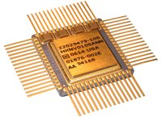

1.11.1. Общие сведения о микроэлектронике
Микроэлектроника — подраздел электроники, связанный с изучением и производством электронных компонентов, с геометрическими размерами элементов порядка нескольких микрометров и меньше.
Микроэлектроника – это одно из направлений электроники, которое призвано создать миниатюрную высоконадёжную аппаратуру с малой потребляемой мощностью, низкой стоимостью и другими положительными характеристиками.
Микроэлектронные устройства обычно производят из полупроводников и полупроводниковых соединений, используя процессы фотолитографии и легирования. Большинство компонентов обычной электроники также применяются и в микроэлектронике: резисторы, конденсаторы, катушки индуктивности, диоды, транзисторы, изоляторы и проводники, но уже в виде миниатюрных устройств в интегральном исполнении.
Электроника прошла несколько этапов развития, за время которых сменилось несколько поколений элементной базы: дискретная электроника электровакуумных приборов, дискретная электроника полупроводниковых приборов, интегральная электроника микросхем (микроэлектроника), интегральная электроника функциональных микроэлектронных устройств (функциональная микроэлектроника).
Элементная база электроники развивается непрерывно возрастающими темпами. Каждое из приведенных поколений, появившись в определенный момент времени, продолжает совершенствоваться в наиболее оправданных направлениях. Развитие изделий электроники от поколения к поколению идет в направлении их функционального усложнения, повышения надежности и срока службы, уменьшения габаритных размеров, массы, стоимости и потребляемой энергии, упрощения технологии и улучшения параметров электронной аппаратуры.
Подлинная информационная революция связана, прежде всего, с созданием электронно-вычислительных машин в конце 40-х годов, и с этого же времени исчисляется эра развития информационной технологии, материальное ядро которой образует микроэлектроника. Микроэлектроника формирует элементную базу всех современных средств приема, передачи и обработки информации, систем управления и связи. Сама микроэлектроника возникла первоначально именно как технология: в едином кристаллическом устройстве оказалось возможным сформировать все основные элементы электронных схем.
Современный этап развития электроники характеризуется широким применением интегральных микросхем (ИМС). Это связано со значительным усложнением требований и задач, решаемых электронной аппаратурой, что привело к росту числа элементов в ней. Число элементов постоянно увеличивается. Разрабатываемые сейчас сложные системы содержат десятки миллионов элементов. В этих условиях исключительно важное значение приобретают проблемы повышения надежности аппаратуры и ее элементов, микроминиатюризация электронных компонентов и комплексной миниатюризации аппаратуры. Все эти проблемы успешно решает микроэлектроника.
Становление микроэлектроники как самостоятельной науки стало возможным благодаря использованию богатого опыта и базы промышленности, выпускающей дискретные полупроводниковые приборы. Однако по мере развития полупроводниковой электроники выяснились серьезные ограничения применения электронных явлений и систем на их основе. Поэтому микроэлектроника продолжает продвигаться быстрыми темпами как в направлении совершенствования полупроводниковой интегральной технологии, так и в направлении использования новых физических явлений.
Разработка любых ИМС представляет собой довольно сложный процесс, требующий решения разнообразных научно-технических проблем. Вопросы выбора конкретного технологического воплощения ИМС решаются с учетом особенностей разрабатываемой схемы, возможностей и ограничений, присущих различным способам изготовления, а также технико-экономического обоснования целесообразности массового производства.
Эти вопросы находят решение путем использования двух основных классов микросхем – полупроводниковых и гибридных. Оба эти класса могут иметь различные варианты структур, каждый из которых с точки зрения проектирования и изготовления обладает определенными преимуществами и недостатками. По своим конструктивным и электрическим характеристикам полупроводниковые и гибридные интегральные схемы дополняют друг друга и могут одновременно применяться в одних и тех же радиоэлектронных комплексах.
При массовом выпуске различных ИМС малой мощности, особенно предназначенных для ЭВМ, используются, в основном, полупроводниковые ИМС. Гибридные микросхемы заняли доминирующее положение в схемах с большими электрическими мощностями, а также в устройствах СВЧ, в которых можно применять как толстопленочную технологию, не требующую жестких допусков и высокой точности нанесения и обработки пленок, так и тонкопленочную технологию для обеспечения нанесения пленочных элементов очень малых размеров.
Изделия микроэлектроники: интегральные микросхемы различной степеней интеграции, микросборки, микропроцессоры, мини- и микро-ЭВМ – позволили осуществить проектирование и промышленное производство функционально сложной радио- и вычислительной аппаратуры, отличающейся от аппаратуры предыдущих поколений лучшими параметрами, более высокими надежностью и сроком службы, меньшими потребляемой энергией и стоимостью. Аппаратура на базе изделий микроэлектроники находит широкое применение во всех сферах деятельности человека. Созданию систем автоматического проектирования, промышленных роботов, автоматизированных и автоматических производственных линий, средств связи и многому другому способствует микроэлектроника.